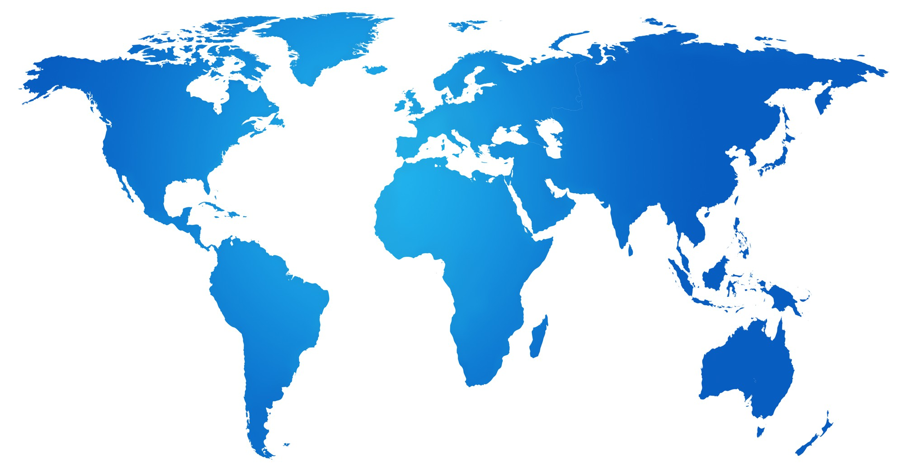

כתבו את שמות היבשות והאוקיינוסים במקום המתאים על המפה (היעזרו בבנק המילים).

1. איזו יבשת היא הגדולה ביותר בשטחה, ואיזו יבשת היא הקטנה ביותר?
2. איזה אוקיינוס נמצא בין יבשת אמריקה לבין אירופה ואפריקה?
3. הסבירו במילים שלכם: מהו "קו המשווה" ואילו יבשות הוא חוצה?
4. מהו ההבדל הגיאוגרפי בין "אי" לבין "חצי אי"? (תנו דוגמה אחת לכל מושג)
5. דמיינו שאתם טסים מישראל (אסיה) לארצות הברית (אמריקה הצפונית) דרך האוקיינוס האטלנטי. לאיזה כיוון עליכם לטוס?
6. מדוע רוב המפות הפיזיות משתמשות בצבעים שונים (ירוק, חום, כחול)? מה מייצג כל צבע?
7. איזו יבשת נמצאת בקוטב הדרומי של כדור הארץ, ומה מיוחד בה מבחינת התיישבות בני אדם?
8. אילו שלוש יבשות מחוברות זו לזו ויוצרות גוש יבשתי אחד גדול? (נקרא לעיתים "העולם הישן")
9. אם נפליג מיבשת אפריקה מזרחה (ימינה במפה), לאיזה אוקיינוס נגיע?
10. מהו ההבדל בין "מדינה" לבין "יבשת"?